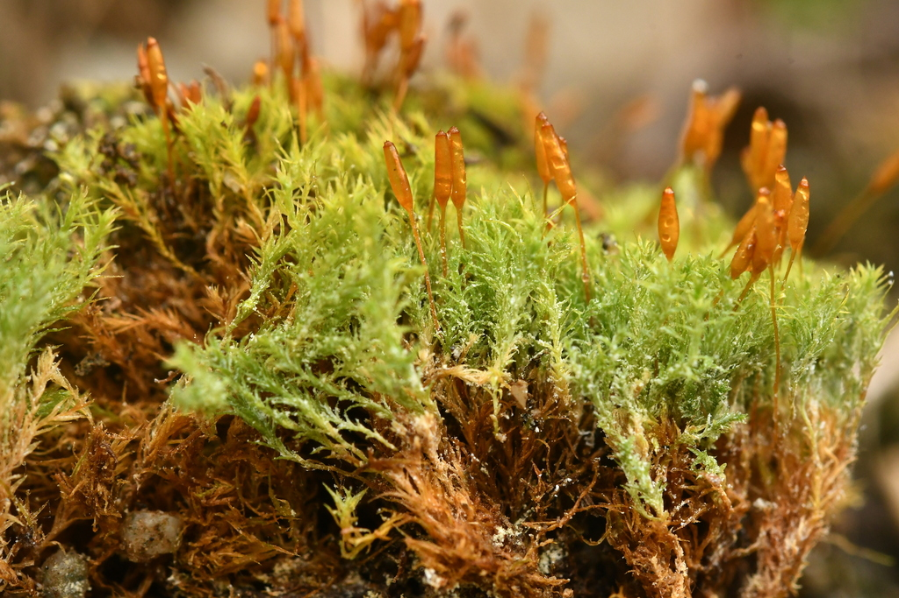

Saelaniaceae
Blue Moss Family / Saelania Moss Family
The Saelaniaceae is a monotypic family (containing only Saelania glaucescens) of acrocarpous mosses within the order Grimmiales. It is characterized by its small size, formation of dense tufts often with a distinctive bluish-green or glaucous hue (especially when dry), preference for acidic rock crevices, and a peristome similar to Ditrichaceae.
Overview
Saelaniaceae contains just a single species, Saelania glaucescens, making it a monotypic family. It is closely related to the Ditrichaceae and sometimes included within that family by some authors. However, its distinct bluish-green or glaucous coloration, caused by waxy deposits on the cuticle, often leads to its recognition as a separate family.
This small moss typically grows in dense cushions or tufts in the crevices of acidic rocks like granite or sandstone, or on thin soil over such rocks. It has a wide but scattered distribution, primarily found in montane, subalpine, boreal, and arctic regions of the Northern Hemisphere (circumboreal/montane), with some occurrences in mountainous areas of the Southern Hemisphere (bipolar distribution).
Quick Facts
- Scientific Name: Saelaniaceae Ignatov & Fedosov
- Common Name: Blue Moss Family, Saelania Moss Family
- Number of Genera: 1 (Saelania)
- Number of Species: 1 (Saelania glaucescens)
- Distribution: Widespread but scattered; circumboreal/montane in the Northern Hemisphere, also in Southern Hemisphere mountains (bipolar).
- Evolutionary Group: Bryophytes - Mosses (Class: Bryopsida, Order: Dicranales)
Key Characteristics
Growth Form and Habit
Plants are acrocarpous, small (usually less than 1 cm tall), forming dense, compact tufts or cushions. A key feature is the often distinct bluish-green or glaucous coloration, particularly noticeable when dry, attributed to epicuticular wax. Stems are erect, often reddish-brown, sparsely branched.
Leaves
Leaves are erect-spreading to slightly curved (secund), typically lanceolate to linear-lanceolate, gradually tapering from the base to a sharp, often subulate apex. Margins are usually plane or slightly recurved below, entire or finely toothed near the apex. The costa (midrib) is strong, single, and typically percurrent (reaching the apex) or shortly excurrent (extending slightly beyond). Leaf cells are small, quadrate to short-rectangular, relatively thick-walled, and generally described as smooth, though sometimes reported as faintly prorate or papillose.
Sporophyte (Capsule)
Sporophytes are terminal on the stems. The seta (stalk) is long, slender, erect, and typically yellowish to reddish. The capsule is erect and symmetric, usually short-cylindrical or ovoid-cylindrical, and often becomes distinctly ribbed or furrowed longitudinally when dry and empty. The operculum (lid) is conical to shortly rostrate (beaked).
The peristome is single, consisting of 16 reddish or orange-brown teeth. The teeth are characteristically deeply divided almost to the base into two (sometimes three) filiform, papillose forks. This peristome structure is very similar to that found in the closely related Ditrichaceae and the broader Dicranales order.
Habitat
Characteristically found growing in crevices of acidic rock faces (e.g., granite, gneiss, sandstone, schist) or on thin, acidic soil accumulated in such crevices or over rock. It prefers relatively dry, exposed to partially shaded sites and is common in montane, subalpine, boreal, and arctic environments.
Field Identification
Identifying Saelaniaceae relies on its color, habitat, and growth form:
Primary Identification Features
- Distinctive Bluish-Green/Glaucous Color: Especially noticeable when the plant is dry.
- Habitat: Almost exclusively found in crevices of acidic rock or thin soil over acidic rock.
- Acrocarpous Tufts: Forming small, dense cushions.
- Split Peristome Teeth: 16 teeth deeply divided into forks (requires magnification).
Secondary Identification Features
- Lanceolate/Linear-Lanceolate Leaves: Tapering to a sharp point.
- Erect, Ribbed Capsule: Capsule often furrowed when dry, held on a long seta.
- Small Size: Plants form compact tufts.
- Strong Costa: Midrib usually reaches or slightly exceeds the leaf tip.
Seasonal Identification Tips
- Color Best Seen Dry: The glaucous hue is often most apparent when plants are dry.
- Sporophytes: Capsules often mature in summer or fall and may persist.
- Year-Round Gametophytes: Tufts are visible year-round in their rock crevice habitats.
Common Confusion Points
- Ditrichaceae (esp. Ditrichum): Very closely related and share the split peristome teeth. Ditrichum species often grow more on soil than directly in rock crevices, typically lack the distinct bluish/glaucous color, and may have more clearly subulate leaves.
- Dicranella (Dicranaceae): Similar peristome, but usually found on soil banks, leaves often more strongly curved (secund), and lack the glaucous color.
- Ceratodon purpureus (Ditrichaceae): Common on various substrates but usually reddish-tinged rather than bluish, leaves broader, capsule distinctly strumose and furrowed.
- Grimmiaceae / Schistidium: Common acrocarps on rock, but have very different leaf structures (often with hyaline hair points, different cell types) and different peristome types (often single, undivided or cribrose teeth). Usually gray-green or blackish, not bluish.
Field Guide Quick Reference
Look For:
- Small acrocarpous tufts
- Distinctive bluish-green/glaucous color (esp. dry)
- Habitat: Crevices of acidic rock
- Leaves lanceolate, sharp-tipped
- Capsule erect, ribbed dry, on long seta
Key Variations:
- Monotypic family: Saelania glaucescens
- Peristome teeth split into 2 forks
- Widespread but scattered distribution
Notable Examples
The family contains only a single species.

Saelania glaucescens
Blue Moss
The sole species in the family. It forms small, dense, bluish-green or glaucous tufts in the crevices of acidic rocks like granite and sandstone. The lanceolate leaves taper to a sharp point. When fertile, it produces erect, cylindrical capsules on long setae; the capsules become ribbed when dry and possess the characteristic peristome of 16 teeth deeply split into two filiform forks. Its distinctive color and habitat make it recognizable.
Phylogeny and Classification
Saelaniaceae is placed within the order Dicranales, a major order of acrocarpous mosses characterized generally by lanceolate to subulate leaves and often by peristomes with 16 teeth split into forks (Dicranoid/Ditrichoid type).
It is considered phylogenetically very close to the family Ditrichaceae. Morphologically, Saelania shares the peristome structure and general gametophyte form with many Ditrichaceae. Its recognition as a separate family hinges primarily on its distinct glaucous appearance due to epicuticular waxes, a feature generally absent in Ditrichaceae. Some taxonomic treatments include Saelania within Ditrichaceae, while others maintain its status as a distinct, monotypic family based on this unique trait and potentially subtle molecular differences.
Position in Plant Phylogeny
- Kingdom: Plantae
- Division: Bryophyta (Mosses)
- Class: Bryopsida
- Order: Dicranales
- Family: Saelaniaceae (or included in Ditrichaceae)
Evolutionary Significance
The Saelaniaceae (or the genus Saelania) is significant for:
- Physiological Adaptation: The development of epicuticular waxes causing the glaucous appearance may be an adaptation related to UV protection or water relations in its often exposed rock crevice habitat.
- Biogeography: Its wide bipolar, montane/boreal distribution pattern is shared by a number of bryophytes and provides insights into long-distance dispersal or ancient connections.
- Relationship to Ditrichaceae: Its close relationship highlights the diversity and fine-scale differentiation within the Ditrichaceae-Saelaniaceae lineage of Dicranales.
- Habitat Specialization: Being a characteristic indicator of acidic rock crevice microhabitats in certain environments.